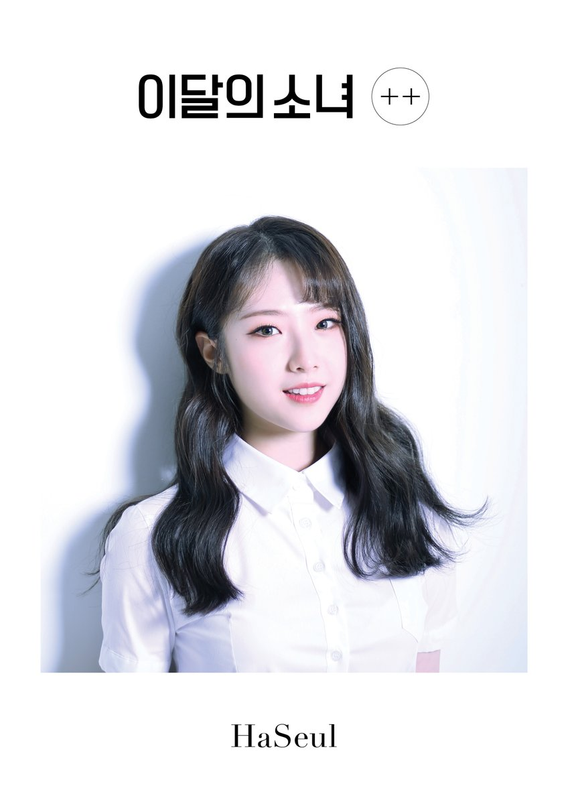

Cho Haseul

A terceira membro do grupo a ser revelada com sua música de estreia: Let Me In.
Aqui vai algumas informações sobre ela.
- Nome de nascimento: Cho Ha-seul (조하 슬).
- Stage Name: Haseul (하슬).
- Nascimento: 18 de agosto de 1997.
- Nacionalidade: Coreana.
- Mês: Garota de Dezembro (foi apresentada em dezembro de 2016).
- Animal: Pássaro.
- Cor: Verde escuro.
- Posição do grupo: Líder, vocalista principal.
- Signo do zodíaco: Leão.
- Sub-Unit: LООПΔ 1/3 (Líder).
Fatos da Haseul:
- Ela nasceu em Ansan, Província de Gyeonggi, Coréia do Sul.
- Haseul tem um irmão mais novo, nascido em 2002.
- Na audição, ela foi aceita cantando "Friday" da IU.
- Os apelidos de Haseul são Jo Leader e Harvard.
- Ela fala Inglês.
- Haseul pode tocar guitarra e piano.
- Haseul tem medo de pássaros. (Quando Haseul era uma criança, ela ficou muito assustada com um pombo.)
- Haseul é o mais fraco em aegyo (agir de maneira fofa), mas os fãs continuam pedindo para ela fazer isso.
- Ela foi trainee por um ano.
- Haseul participou do programa de sobrevivência da YG, MIXNINE, mas não conseguiu chegar até a final.
- A modelo de Haseul é IU.
Essas foram algumas curiosidades sobre a terceira membro a ser revelada do loona. Ela não fez seu re-debut (segunda estreia), mas já assinou com uma nova empresa, que é a mesma da Heejin e das meninas do OEC, a MODHAUS.
Confira abaixo as redes sociais de Haseul.
Instagram
Canal oficial da empresa
@official_ARTMS